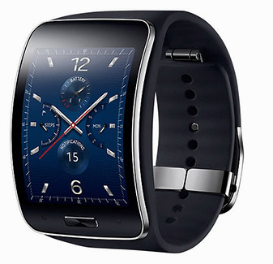
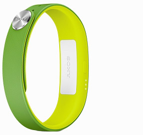
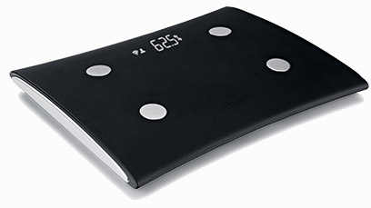
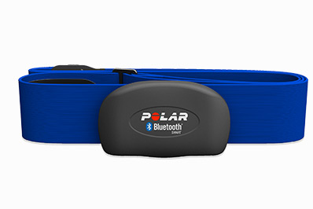

Smartlife > Salute e Benessere
Samsung Galaxy Gear S con SIM
Un elegante display Super AMOLED curvo per una vestibilità ottimale, schermate personalizzabili e cinturini intercambiabili per esprimere al meglio il proprio stile
Sony Smartband FE
Un innovativo braccialetto da polso in grado di registrare automaticamente le tue attività fisiche, sociali e di intrattenimento
Ihealth HS5
Registra le calorie e le attività giornaliere, pianifica gli obiettivi di peso. Organizza le registrazioni, i grafici, lo storico delle letture e visualizza le tendenze
Polar HR
Utilizzato con un'applicazione mobile per lo sport o con un training computer Polar compatibile, il sensore visualizza in modo estremamente preciso la frequenza cardiaca in tempo reale durante l’allenamento